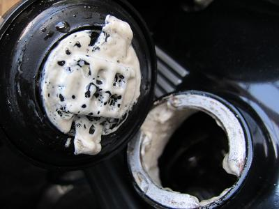
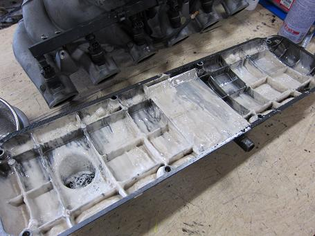
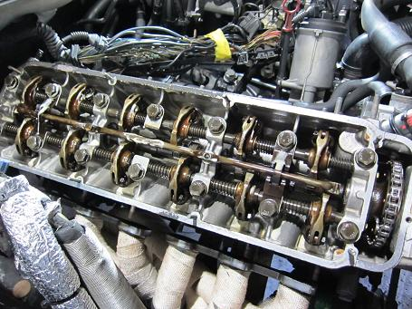
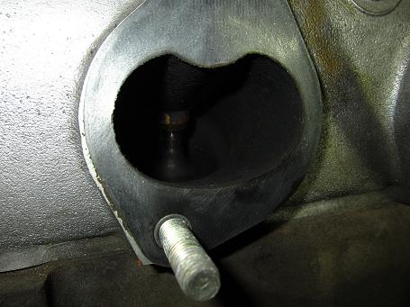
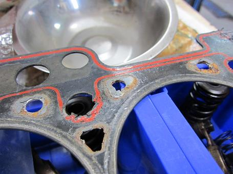
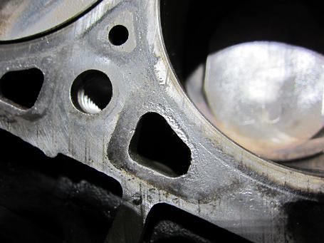
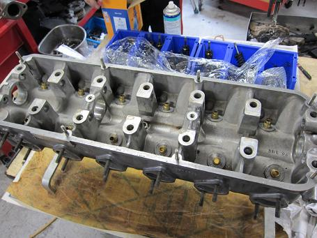
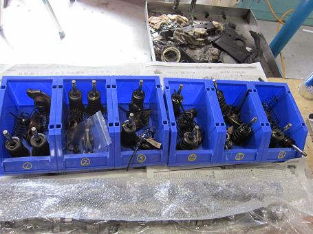
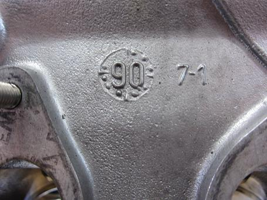
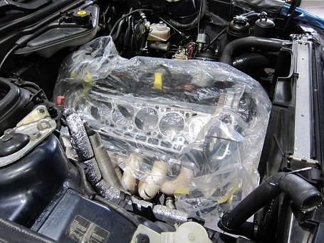

 オイルフィラーキャップを開けると、乳化したオイルが・・・ 熱を入れると水分が飛ぶかとオイルを交換し高速を試走してみたが、冷却水は減り、オイルが水と混ざり白くなっていた。 もしかして、ここのところのオーバーヒート続きでヘッドにヒビが入った？とか、、、 ２０年経つと思わぬ所が壊れるだけに、考えるのは重症の方向ばかり。 それに比べると軽症なガスケット抜けだと祈りつつ・・・ |
  現在の主治医にコンタクトを取り、修理の段取りをお願いした。 ヘッドカバを開けると・・・・ バターのようになったオイルがべっとり（汗 ロッカーアーム周辺にもこびりついていた。オイルパンはどんな悲惨な状況なのだろう・・・ オイルラインのバンジョーボルトがまた１つ脱落していた。緩まないようにする良い方法はないのだろうか。 |
 インマニ側から見たバルブ ひどい汚れは無いように見える。 どんな洗浄剤を使うより、日ごろから踏んでおくことが大切だ（笑 |
 ガスケットの抜けていたであろう場所だ。 やっぱり５番・６番辺りが熱がこもりやすく劣化しやすいようだ。 「原因はガスケット抜けで間違いないだろう」との主治医の判断にホッとした。 まるでいままで交換してないくらい全体的にボロボロに劣化していた。 また抜けを気にして踏めないのは嫌だし、今回はメタルガスケットを入れることにした。 |
 これは腰下ブロック５番ピストン辺りの写真 ウォーターライン周辺が痩せて荒れてきている。 本当はこの辺りも綺麗に処理したかったが、エンジンを下ろす必要があり見送ることにした。 |
  綺麗に洗浄されたシリンダーヘッドとアーム、バルブ類 バルブガイドにガタがあり、交換しようと部品を取り寄せようとしたが既に生産終了になっていた。 仕方が無いのでガイドを作って打ち代えてもらうことにした。 素材はリン青銅を使用する予定だ。 他にもシリンダーヘッドはクラックテスト、面研とバルブシートカットを施す予定だ。 |
 製造年月だろうか？ ９０年１０月１日～７日と見るのか？ |
 シリンダーヘッド加工のため、しばらくはこのまま！ 後編へつづく！
|